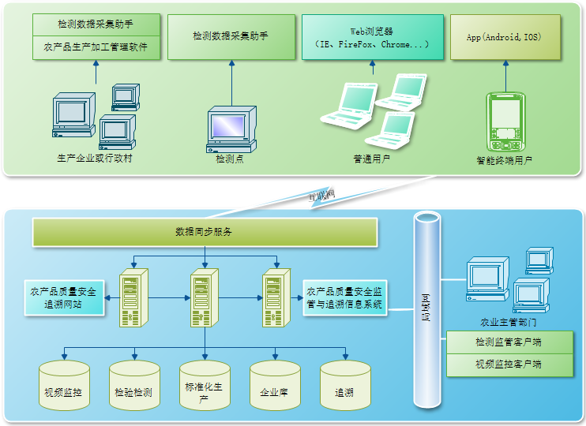
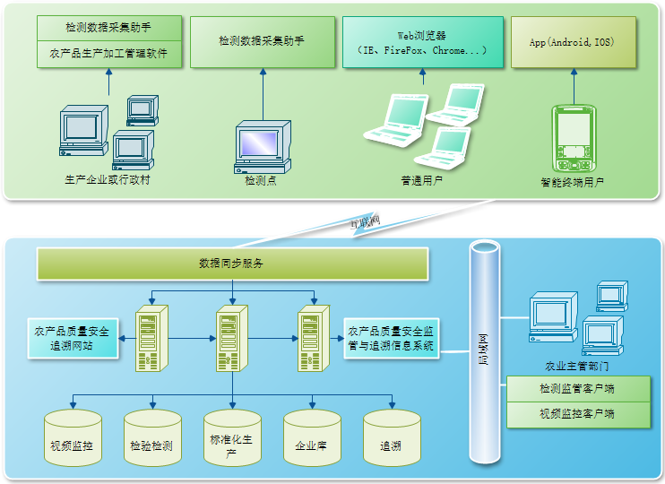

返回
-
农资实名制备案管理信息系统
基本概况
为了打击假冒伪劣农资和乱涨价行为，净化农资市场，掌握敏感农业投入品流向，政府监管部门需要对所有农资摊点进行信任评估，增设监管机制，建立实名制登记备案制度，农资销售实行发票实名制。然而，在实际工作过程中，发现存在以下问题：
Ø 农资摊点分布范围比较广，靠人力巡查难度大，覆盖面窄。
Ø 如果采用Excel表格填写、通过电子邮件上报，能够解决一定的问题，但同样存在上报的数据需要人工汇总，而且真实性难以保证。
Ø 大部分农资经销点还采用手工记账方式，管理相对落后。
基于以上问题，为了进一步强化备案管理体系，提高工作效率，建立信息化的农资实名制监管系统已经成为政府加强农资监管的重要辅助管理手段之一。

主要功能
Ø 农资实名制监管系统
农资实名制监管系统包括：农资单位注册登记、农资备案登记、实名销售、追溯监管、监测预警、电子稽查、搜索查询、运行监管、假冒伪劣农资查询、基础数据管理和系统管理。 Ø 农资店面管理软件
农资预警管理、采购管理、销售管理、库存管理、供应商管理、往来账务管理、客户管理、以及农资数据分析、假冒伪劣农资排查、数据上报和接收接口。
Ø 电子交易结算系统
包括POS系统、销售票据打印、条码打印、条码扫描、二代身份证识别设备及接口软件（读取身份和照片信息，实现实名制销售）等。
Ø 手机数据上报Web应用
开发手机数据上报Web应用，实现智能手机农资实名制备案数据上报功能。
-
食品（农产品）质量安全监管信息平台
食品（农产品）质量安全监管信息平台，其主要功能是管理辖区内所有食品（农产品）的检验检测数据，建立市场准入机制，完善农产品和食品准入登记备案，并与农产品的产地准出和追溯进行对接，形成完整的农产品质量安全监管链条，提升农产品流通环节监管水平。通过信息平台建立，能够将市场、超市、餐饮企业、政府监管部门和消费者有机的联系在一起，形成良性的互动，通过企业自律、政府监管、消费者监督来达到共管共治的目的。

主要功能
Ø 实现所有检测点的联网和数据上报汇总、统计分析，并保证检测数据的真实性。
Ø 建立起规范的样品采样与管理流程。
Ø 建立起食品（农产品）准入登记备案管理制度和销售流向备案登记制度。
Ø 建立起食品（农产品）质量安全监管信息发布体系和投诉举报体系。
Ø 信息推送服务，实现通知、预警信息的主动推送。
-
农产品质量安全追溯管理信息平台
信息平台组成
信息平台包括运行软硬件环境和应用软件组成，其中应用软件由以下几个部分组成：
检测数据采集助手软件、农产品质量安全监管与追溯信息系统软件、视频服务器软件、农产品质量安全追溯服务门户网站和手机监管客户端。
平台的组成结构示意图如下图所示：
 

功能介绍
1）企业信息
主要包括企业名称、所在辖区、邮政编码、法人代表、联系人、联系方式、通信地址、企业产品商标、认证标示以及企业法人营业执照、产品认证标示和产品检测报告等电子版信息。
2）生产基地资料
生产基地包括种植业、畜禽养殖业和水产养殖基地。种植业生产基地信息应涵盖地形、地貌、土壤状况（成土母质、土壤类型、环境背景值）、经纬度、水文（河流、水系地面、地下水资源）、气象（年均气温、无霜期）、主要病虫害等资料；畜禽养殖基地应显示场房建筑结构和面积、经纬度、饲养方式、畜禽用水来源等；水产养殖应说明水面积、水深、经纬度、养殖方式、水库（湖、塘）淤泥深度以及产地环境监测与评估报告。 3）种子种苗
种子是指种植业所需的粮食、油料、棉花、蔬菜、水果、经济作物、中药材等种子的品种（果树为嫁接品种）、名称、商标、是否转基因、产地等信息；种苗是指畜禽养殖业和水产养殖业所需的畜禽苗和水产苗，应包括名称、品种、免疫情况、日龄、重量、供苗单位等。
4）生产投入品
生产投入品是指在农产品生产过程中使用或添加的物质。包括肥料、农药、兽药、饲料及饲料添加剂等农用生产资料产品和农膜、农机、农业工程设施设备等农用工程物资产品。
5）种（养）植（殖）过程管理
（１）种植业生产过程管理
种植业生产应针对性地加强生产过程中各阶段的组织管理工作。每种作物都离不开耕地、播种、施肥、田间管理和收获等记录。
（２）畜牧业的生产过程管理
畜牧业生产具有明显的周期性，而且不同种类的牲畜生产的周期不同。如鸡半年、猪一年、羊两年、牛三年、马四年等。畜禽饲养防疫严格执行绿色食品畜禽饲养防疫准则《NY/T1892-2010》和绿色食品动物卫生准则《NY/T473-2001》。
（３）渔业生产管理
渔业生产一般包括苗种繁殖、成鱼饲养管理和成鱼捕捞等过程的组织管理，尤其要注重成鱼的饲养管理，严格按照绿色食品渔业饲料及饲料添加剂使用准则《NY/T2112-2011》执行。
（４）收、储、运信息
主要包括产品名称、商标、 生产企业、认证标示及标志编号、规格型号、包装情况、生产（收获）日期、产品批号、联系人、 联系电话、车牌号、外运方式：（有氧、冷链、常规）、外运量、产品流向、流向路径、出发时间、到达时间、途中发生意外情况等信息。


 激光打码设备可在各种材料表面打印标记，对材料不产生腐蚀，无磨损、无毒害、无污染，可打出各种文字、符号或复杂图案等，字符大小可从毫米到微米量级，标记的字迹清晰醒目，永久不可擦除，这对产品的防伪、追溯有特殊意义。其中在线激光打码机可对快速移动的产品进行非接触式高质量激光打码，设备安装灵活，即使是工况极其复杂的流水生产线，也能运行自如。
激光打码设备可在各种材料表面打印标记，对材料不产生腐蚀，无磨损、无毒害、无污染，可打出各种文字、符号或复杂图案等，字符大小可从毫米到微米量级，标记的字迹清晰醒目，永久不可擦除，这对产品的防伪、追溯有特殊意义。其中在线激光打码机可对快速移动的产品进行非接触式高质量激光打码，设备安装灵活，即使是工况极其复杂的流水生产线，也能运行自如。